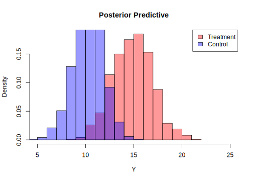

3.3 Linear regression: The conjugate normal-normal/inverse gamma model
In this setting, we analyze the conjugate normal-normal/inverse gamma model, which is a cornerstone in econometrics. In this model, the dependent variable \(y_i\) is related to a set of regressors \(\boldsymbol{x}_i = [x_{i1} \ x_{i2} \ \dots \ x_{iK}]^{\top}\) in a linear way, that is: \[ y_i = \beta_1 x_{i1} + \beta_2 x_{i2} + \dots + \beta_K x_{iK} + \mu_i = \boldsymbol{x}_i^{\top} \boldsymbol{\beta} + \mu_i, \] where \(\boldsymbol{\beta} = [\beta_1 \ \beta_2 \ \dots \ \beta_K]^{\top}\) and \(\mu_i \stackrel{iid}{\sim} N(0, \sigma^2)\) is a stochastic error such that \(\mathbb{E}[\mu_i \mid \boldsymbol{x}_i] = 0\).
Defining the vectors and matrices: \[ \boldsymbol{y} = \begin{bmatrix} y_1 \\ y_2 \\ \vdots \\ y_N \end{bmatrix}, \quad \boldsymbol{X} = \begin{bmatrix} x_{11} & x_{12} & \dots & x_{1K} \\ x_{21} & x_{22} & \dots & x_{2K} \\ \vdots & \vdots & \vdots & \vdots \\ x_{N1} & x_{N2} & \dots & x_{NK} \end{bmatrix}, \quad \boldsymbol{\mu} = \begin{bmatrix} \mu_1 \\ \mu_2 \\ \vdots \\ \mu_N \end{bmatrix}, \]
we can write the model in matrix form as: \[ \boldsymbol{y} = \boldsymbol{X} \boldsymbol{\beta} + \boldsymbol{\mu}, \]
where \(\boldsymbol{\mu} \sim N(\boldsymbol{0}, \sigma^2 \boldsymbol{I})\). This implies that: \[ \boldsymbol{y} \sim N(\boldsymbol{X} \boldsymbol{\beta}, \sigma^2 \boldsymbol{I}).\]
In regression analysis, to simplify notation, we depart from the conventional statistical notation, which defines lowercase letters as realizations of random variables, typically denoted by uppercase letters. We hope it is clear from the context when we refer to random vectors and matrices, and their realizations. Thus, we use bold lowercase letters for vectors and bold uppercase letters for matrices. This applies to the rest of the book.
Thus, the likelihood function is: \[\begin{align*} p({\boldsymbol{y}}\mid \boldsymbol{\beta}, \sigma^2, {{\boldsymbol{X}}}) & = (2\pi\sigma^2)^{-\frac{N}{2}} \exp \left\{-\frac{1}{2\sigma^2} ({\boldsymbol{y}} - {\boldsymbol{X}}\boldsymbol{\beta})^{\top}({\boldsymbol{y}} - {\boldsymbol{X}}\boldsymbol{\beta}) \right\} \\ & \propto (\sigma^2)^{-\frac{N}{2}} \exp \left\{-\frac{1}{2\sigma^2} ({\boldsymbol{y}} - {\boldsymbol{X}}\boldsymbol{\beta})^{\top}({\boldsymbol{y}} - {\boldsymbol{X}}\boldsymbol{\beta}) \right\}. \end{align*}\]
The conjugate priors for the parameters are \[\begin{align*} \boldsymbol{\beta}\mid \sigma^2 & \sim N(\boldsymbol{\beta}_0, \sigma^2 {\boldsymbol{B}}_0),\\ \sigma^2 & \sim IG(\alpha_0/2, \delta_0/2). \end{align*}\]
Then, the posterior distribution is \[\begin{align*} \pi(\boldsymbol{\beta},\sigma^2\mid \boldsymbol{y},\boldsymbol{X})&\propto (\sigma^2)^{-\frac{N}{2}} \exp \left\{-\frac{1}{2\sigma^2} ({\boldsymbol{y}} - {\boldsymbol{X}}\boldsymbol{\beta})^{\top}({\boldsymbol{y}} - {\boldsymbol{X}}\boldsymbol{\beta}) \right\} \\ & \times (\sigma^2)^{-\frac{K}{2}} \exp \left\{-\frac{1}{2\sigma^2} (\boldsymbol{\beta} - \boldsymbol{\beta}_0)^{\top}{\boldsymbol{B}}_0^{-1}(\boldsymbol{\beta} - \boldsymbol{\beta}_0)\right\} \\ & \times \frac{(\delta_0/2)^{\alpha_0/2}}{\Gamma(\alpha_0/2)}\left(\frac{1}{\sigma^2}\right)^{\alpha_0/2+1}\exp \left\{-\frac{\delta_0}{2\sigma^2} \right\} \\ & \propto (\sigma^2)^{-\frac{K}{2}} \exp \left\{-\frac{1}{2\sigma^2} [\boldsymbol{\beta}^{\top}({\boldsymbol{B}}_0^{-1} + {\boldsymbol{X}}^{\top}{\boldsymbol{X}})\boldsymbol{\beta} - 2\boldsymbol{\beta}^{\top}({\boldsymbol{B}}_0^{-1}\boldsymbol{\beta}_0 + {\boldsymbol{X}}^{\top}{\boldsymbol{X}}\hat{\boldsymbol{\beta}})] \right\} \\ & \times \left(\frac{1}{\sigma^2}\right)^{(\alpha_0+N)/2+1}\exp \left\{-\frac{\delta_0+ {\boldsymbol{y}}^{\top}{\boldsymbol{y}} + \boldsymbol{\beta}_0^{\top}{\boldsymbol{B}}_0^{-1}\boldsymbol{\beta}_0}{2\sigma^2} \right\}, \end{align*}\]
where \(\hat{\boldsymbol{\beta}}=({\boldsymbol{X}}^{\top}{\boldsymbol{X}})^{-1}{\boldsymbol{X}}^{\top}{\boldsymbol{y}}\) is the maximum likelihood estimator.
Adding and subtracting \(\boldsymbol{\beta}_n^{\top}{{\boldsymbol{B}}}_n^{-1} \boldsymbol{\beta}_n\) to complete the square, where \(\boldsymbol{B}_n = (\boldsymbol{B}_0^{-1} + \boldsymbol{X}^{\top}\boldsymbol{X})^{-1}\) and \(\boldsymbol{\beta}_n = \boldsymbol{B}_n(\boldsymbol{B}_0^{-1}\boldsymbol{\beta}_0 + \boldsymbol{X}^{\top}\boldsymbol{X}\hat{\boldsymbol{\beta}})\), \[\begin{align*} \pi(\boldsymbol{\beta},\sigma^2\mid \boldsymbol{y},\boldsymbol{X})&\propto \underbrace{(\sigma^2)^{-\frac{K}{2}} \exp \left\{-\frac{1}{2\sigma^2} (\boldsymbol{\beta}-\boldsymbol{\beta}_n)^{\top}{\boldsymbol{B}}^{-1}_n(\boldsymbol{\beta}-\boldsymbol{\beta}_n) \right\}}_1 \\ & \times \underbrace{(\sigma^2)^{-\left(\frac{\alpha_n}{2}+1 \right)} \exp \left\{-\frac{\delta_n}{2\sigma^2} \right\}}_2. \end{align*}\]
The first expression is the kernel of a normal density function, \(\boldsymbol{\beta}\mid \sigma^2, \boldsymbol{y}, \boldsymbol{X} \sim N(\boldsymbol{\beta}_n, \sigma^2\boldsymbol{B}_n)\). The second expression is the kernel of a inverse gamma density, \(\sigma^2\mid \boldsymbol{y}, \boldsymbol{X}\sim IG(\alpha_n/2, \delta_n/2)\), where \(\alpha_n = \alpha_0 + N\) and \(\delta_n = \delta_0 + \boldsymbol{y}^{\top}\boldsymbol{y} + \boldsymbol{\beta}_0^{\top}\boldsymbol{B}_0^{-1}\boldsymbol{\beta}_0 - \boldsymbol{\beta}_n^{\top}\boldsymbol{B}_n^{-1}\boldsymbol{\beta}_n\).
Taking into account that \[\begin{align*}\boldsymbol{\beta}_n & = (\boldsymbol{B}_0^{-1} + \boldsymbol{X}^{\top}\boldsymbol{X})^{-1}(\boldsymbol{B}_0^{-1}\boldsymbol{\beta}_0 + \boldsymbol{X}^{\top}\boldsymbol{X}\hat{\boldsymbol{\beta}})\\ & = (\boldsymbol{B}_0^{-1} + \boldsymbol{X}^{\top}\boldsymbol{X})^{-1}\boldsymbol{B}_0^{-1}\boldsymbol{\beta}_0 + (\boldsymbol{B}_0^{-1} + \boldsymbol{X}^{\top}\boldsymbol{X})^{-1} \boldsymbol{X}^{\top}\boldsymbol{X}\hat{\boldsymbol{\beta}}, \end{align*}\]
where \(({\boldsymbol{B}}_0^{-1} + {\boldsymbol{X}}^{\top}{\boldsymbol{X}})^{-1}{\boldsymbol{B}}_0^{-1}=\boldsymbol{I}_K-({\boldsymbol{B}}_0^{-1} + {\boldsymbol{X}}^{\top}{\boldsymbol{X}})^{-1}{\boldsymbol{X}}^{\top}{\boldsymbol{X}}\) (Smith 1973). Setting \({\boldsymbol{W}}=({\boldsymbol{B}}_0^{-1} + {\boldsymbol{X}}^{\top}{\boldsymbol{X}})^{-1}{\boldsymbol{X}}^{\top}{\boldsymbol{X}}\) we have \(\boldsymbol{\beta}_n=(\boldsymbol{I}_K-{\boldsymbol{W}})\boldsymbol{\beta}_0+{\boldsymbol{W}}\hat{\boldsymbol{\beta}}\), that is, the posterior mean of \(\boldsymbol{\beta}\) is a weighted average between the sample and prior information, where the weights depend on the precision of each piece of information. Observe that when the prior covariance matrix is highly vague (non–informative), such that \({\boldsymbol{B}}_0^{-1}\rightarrow \boldsymbol{0}_K\), we obtain \({\boldsymbol{W}} \rightarrow I_K\), such that \(\boldsymbol{\beta}_n \rightarrow \hat{\boldsymbol{\beta}}\), that is, the posterior mean location parameter converges to the maximum likelihood estimator.
In addition, we know that the posterior conditional covariance matrix of the location parameters \(\sigma^2({\boldsymbol{B}}_0^{-1} + {\boldsymbol{X}}^{\top}{\boldsymbol{X}})^{-1}=\sigma^2({\boldsymbol{X}}^{\top}{\boldsymbol{X}})^{-1}-\sigma^2\left(({\boldsymbol{X}}^{\top}{\boldsymbol{X}})^{-1}({\boldsymbol{B}}_0 + ({\boldsymbol{X}}^{\top}{\boldsymbol{X}})^{-1})^{-1}({\boldsymbol{X}}^{\top}{\boldsymbol{X}})^{-1}\right)\) is positive semi-definite.5 Given that \(\sigma^2({\boldsymbol{X}}^{\top}{\boldsymbol{X}})^{-1}\) is the covariance matrix of the maximum likelihood estimator, we observe that prior information reduces estimation uncertainty.
Another way to see this model is by considering that both \(\boldsymbol{y}\) and \(\boldsymbol{\beta}\) are treated as random variables under the Bayesian framework. Thus, we can express the joint distribution of these two vectors as follows: \[\begin{align*} \begin{bmatrix} \boldsymbol{\beta}\\ \boldsymbol{y} \end{bmatrix}\sim N\left [ \begin{pmatrix} \boldsymbol{\beta}_{0} \\ \boldsymbol{X}\boldsymbol{\beta}_{0} \end{pmatrix} , \sigma^2\begin{pmatrix} \boldsymbol{B}_{0} & \boldsymbol{B}_{0} \boldsymbol{X}^{\top} \\ \boldsymbol{X}\boldsymbol{B}_{0}^{\top} & \boldsymbol{X}\boldsymbol{B}_{0}\boldsymbol{X}^{\top}+\boldsymbol{I}_N \end{pmatrix}\right ], \end{align*}\] where we use that \[\begin{align*} Cov[\boldsymbol{\beta},\boldsymbol{y}\mid \boldsymbol{X}]&=\mathbb{E}[\boldsymbol{\beta}\boldsymbol{y}^{\top}]-\mathbb{E}[\boldsymbol{\beta}]\mathbb{E}[\boldsymbol{y}^{\top}]\\ &=\mathbb{E}[\boldsymbol{\beta}(\boldsymbol{X}\boldsymbol{\beta}+\boldsymbol{\mu})^{\top}]-\mathbb{E}[\boldsymbol{\beta}]\mathbb{E}[\boldsymbol{y}^{\top}]\\ &=[Var[\boldsymbol{\beta}]+\mathbb{E}[\boldsymbol{\beta}]\mathbb{E}[\boldsymbol{\beta}^{\top}]]\boldsymbol{X}^{\top}-\mathbb{E}[\boldsymbol{\beta}]\mathbb{E}[\boldsymbol{y}^{\top}]\\ &=\sigma^2\boldsymbol{B}_0\boldsymbol{X}^{\top}+\boldsymbol{\beta}_0\boldsymbol{\beta}_0^{\top}\boldsymbol{X}^{\top}-\boldsymbol{\beta}_0\boldsymbol{\beta}_0^{\top}\boldsymbol{X}^{\top}\\ &=\sigma^2\boldsymbol{B}_0\boldsymbol{X}^{\top}. \end{align*}\]
Then, we can obtain the conditional distribution of \(\boldsymbol{\beta} \mid \boldsymbol{y}\) using the properties of the multivariate normal distribution. This distribution is normal with mean equal to \[\begin{align} \boldsymbol{\beta}_{0} + \boldsymbol{B}_{0} \boldsymbol{X}^{\top} \left( \boldsymbol{X} \boldsymbol{B}_{0} \boldsymbol{X}^{\top} + \boldsymbol{I}_N \right)^{-1} (\boldsymbol{y} - \boldsymbol{X} \boldsymbol{\beta}_{0}), \tag{3.5} \end{align}\]
and covariance matrix \[ \sigma^2 \left( \boldsymbol{B}_{0} - \boldsymbol{B}_{0} \boldsymbol{X}^{\top} \left( \boldsymbol{X} \boldsymbol{B}_{0} \boldsymbol{X}^{\top} + \boldsymbol{I}_N \right)^{-1} \boldsymbol{X} \boldsymbol{B}_{0}^{\top} \right). \]
Observe that in this representation, the posterior mean is equal to the prior mean plus a correction term that takes into account the deviation between the observations and the prior expected value (\(\boldsymbol{X} \boldsymbol{\beta}_{0}\)). The weight of this correction is given by the matrix \(\boldsymbol{B}_{0} \boldsymbol{X}^{\top} \left( \boldsymbol{X} \boldsymbol{B}_{0} \boldsymbol{X}^{\top} + \boldsymbol{I}_N \right)^{-1}\).
This form of expressing the posterior distribution is relevant for gaining some intuition on Bayesian inference in time series models within the Gaussian linear state-space representation in Chapter 8, also known as the Kalman filter in time series literature.
We can show that both conditional posterior distributions are the same. In particular, the posterior mean in Equation (3.5) is \([\boldsymbol{I}_K-\boldsymbol{B}_{0}\boldsymbol{X}^{\top}(\boldsymbol{X}\boldsymbol{B}_{0}\boldsymbol{X}^{\top}+ \boldsymbol{I}_N)^{-1}\boldsymbol{X}]\boldsymbol{\beta}_{0}+\boldsymbol{B}_{0}\boldsymbol{X}^{\top}(\boldsymbol{X}\boldsymbol{B}_{0}\boldsymbol{X}^{\top}+ \boldsymbol{I}_N)^{-1}\boldsymbol{y}\), where \[\begin{align*} \boldsymbol{B}_{0}\boldsymbol{X}^{\top}(\boldsymbol{X}\boldsymbol{B}_{0}\boldsymbol{X}^{\top}+ \boldsymbol{I}_N)^{-1} &=\boldsymbol{B}_{0}\boldsymbol{X}^{\top}[\boldsymbol{I}_N-\boldsymbol{I}_N\boldsymbol{X}(\boldsymbol{B}_0^{-1}+\boldsymbol{X}^{\top}\boldsymbol{I}_N\boldsymbol{X})^{-1}\boldsymbol{X}^{\top}\boldsymbol{I}_N]\\ &=\boldsymbol{B}_{0}[\boldsymbol{I}_K-\boldsymbol{X}^{\top}\boldsymbol{I}_N\boldsymbol{X}(\boldsymbol{B}_0^{-1}+\boldsymbol{X}^{\top}\boldsymbol{I}_N\boldsymbol{X})^{-1}]\boldsymbol{X}^{\top}\\ &=\boldsymbol{B}_{0}[\boldsymbol{I}_K-[\boldsymbol{I}_K-\boldsymbol{B}_0^{-1}(\boldsymbol{B}_0^{-1}+\boldsymbol{X}^{\top}\boldsymbol{I}_N\boldsymbol{X})^{-1}]]\boldsymbol{X}^{\top}\\ &=(\boldsymbol{B}_0^{-1}+\boldsymbol{X}^{\top}\boldsymbol{X})^{-1}\boldsymbol{X}^{\top}, \end{align*}\] where the first equality uses the Woodbury matrix identity (matrix inversion lemma), and the third equality uses \(\boldsymbol{D}(\boldsymbol{D}+\boldsymbol{E})^{-1}=\boldsymbol{I}-\boldsymbol{E}(\boldsymbol{D}+\boldsymbol{E})^{-1}\).
Thus, \[\begin{align*} \boldsymbol{\beta}_n&=[\boldsymbol{I}_K-\boldsymbol{B}_{0}\boldsymbol{X}^{\top}(\boldsymbol{X}\boldsymbol{B}_{0}\boldsymbol{X}^{\top}+ \boldsymbol{I}_N)^{-1}\boldsymbol{X}]\boldsymbol{\beta}_{0}+\boldsymbol{B}_{0}\boldsymbol{X}^{\top}(\boldsymbol{X}\boldsymbol{B}_{0}\boldsymbol{X}^{\top}+ \boldsymbol{I}_N)^{-1}\boldsymbol{y}\\ &=[\boldsymbol{I}_K-(\boldsymbol{B}_0^{-1}+\boldsymbol{X}^{\top}\boldsymbol{X})^{-1}\boldsymbol{X}^{\top}\boldsymbol{X}]\boldsymbol{\beta}_{0}+(\boldsymbol{B}_0^{-1}+\boldsymbol{X}^{\top}\boldsymbol{X})^{-1}\boldsymbol{X}^{\top}\boldsymbol{y}\\ &=[\boldsymbol{I}_K-(\boldsymbol{B}_0^{-1}+\boldsymbol{X}^{\top}\boldsymbol{X})^{-1}\boldsymbol{X}^{\top}\boldsymbol{X}]\boldsymbol{\beta}_{0}+(\boldsymbol{B}_0^{-1}+\boldsymbol{X}^{\top}\boldsymbol{X})^{-1}\boldsymbol{X}^{\top}\boldsymbol{X}\hat{\boldsymbol{\beta}} \end{align*}\] Again, we see that the posterior mean is a weighted average between the prior mean, and the maximum likelihood estimator.
The equality of variances of both approaches is as follows: \[\begin{align*} Var[\boldsymbol{\beta}\mid \boldsymbol{y}]& = \sigma^2(\boldsymbol{B}_{0}-\boldsymbol{B}_{0}\boldsymbol{X}^{\top}(\boldsymbol{X}\boldsymbol{B}_{0}\boldsymbol{X}^\top+\boldsymbol{I}_N)^{-1} \boldsymbol{X}\boldsymbol{B}_{0})\\ &=\sigma^2(\boldsymbol{B}_{0}-\boldsymbol{B}_{0}\boldsymbol{X}^{\top}(\boldsymbol{I}_N- \boldsymbol{I}_N\boldsymbol{X}(\boldsymbol{B}_{0}^{-1}+\boldsymbol{X}^{\top}\boldsymbol{I}_N\boldsymbol{X})^{-1}\boldsymbol{X}^{\top}\boldsymbol{I}_N)\boldsymbol{X}\boldsymbol{B}_{0})\\ &=\sigma^2(\boldsymbol{B}_{0}-\boldsymbol{B}_{0}\boldsymbol{X}^{\top}\boldsymbol{X}\boldsymbol{B}_{0}+ \boldsymbol{B}_{0}\boldsymbol{X}^{\top}\boldsymbol{X}(\boldsymbol{B}_{0}^{-1}+\boldsymbol{X}^{\top}\boldsymbol{X})^{-1}\boldsymbol{X}^{\top}\boldsymbol{X}\boldsymbol{B}_{0})\\ &=\sigma^2(\boldsymbol{B}_{0}-\boldsymbol{B}_{0}\boldsymbol{X}^{\top}\boldsymbol{X}\boldsymbol{B}_{0}+ \boldsymbol{B}_{0}\boldsymbol{X}^{\top}\boldsymbol{X}[\boldsymbol{I}_K-(\boldsymbol{B}_{0}^{-1}+\boldsymbol{X}^{\top}\boldsymbol{X})^{-1}\boldsymbol{B}_{0}^{-1}]\boldsymbol{B}_{0})\\ &=\sigma^2(\boldsymbol{B}_{0}-\boldsymbol{B}_{0}\boldsymbol{X}^{\top}\boldsymbol{X}(\boldsymbol{B}_{0}^{-1}+\boldsymbol{X}^{\top}\boldsymbol{X})^{-1})\\ &=\sigma^2(\boldsymbol{B}_{0}[\boldsymbol{I}_K-\boldsymbol{X}^{\top}\boldsymbol{X}(\boldsymbol{B}_{0}^{-1}+\boldsymbol{X}^{\top}\boldsymbol{X})^{-1}])\\ &=\sigma^2(\boldsymbol{B}_{0}[\boldsymbol{I}_K-(\boldsymbol{I}_K-\boldsymbol{B}_{0}^{-1}(\boldsymbol{B}_{0}^{-1}+\boldsymbol{X}^{\top}\boldsymbol{X})^{-1})])\\ &=\sigma^2(\boldsymbol{B}_{0}^{-1}+\boldsymbol{X}^{\top}\boldsymbol{X})^{-1}, \end{align*}\] where the second equality uses the Woodbury matrix identity, the fourth equality uses \((\boldsymbol{D}+\boldsymbol{E})^{-1}\boldsymbol{D}=\boldsymbol{I}-(\boldsymbol{D}+\boldsymbol{E})^{-1}\boldsymbol{E}\), and the seventh equality uses \(\boldsymbol{D}(\boldsymbol{D}+\boldsymbol{E})^{-1}=\boldsymbol{I}-\boldsymbol{E}(\boldsymbol{D}+\boldsymbol{E})^{-1}\).
Now, we calculate the posterior marginal distribution of \(\boldsymbol{\beta}\) following the standard approach, \[\begin{align*} \pi(\boldsymbol{\beta}\mid {\boldsymbol{y}},{\boldsymbol{X}}) & = \int_0^{\infty} \pi(\boldsymbol{\beta}, \sigma^2\mid {\boldsymbol{y}},{\boldsymbol{X}}) d\sigma^2 \\ & = \int_0^{\infty} \left(\frac{1}{\sigma^2}\right)^{\frac{\alpha_n+K}{2} + 1} \exp \left\{-\frac{s}{2\sigma^2}\right\} d\sigma^2, \end{align*}\] where \(s = \delta_n + (\boldsymbol{\beta} - \boldsymbol{\beta}_n)^{\top}{{\boldsymbol{B}}}_n^{-1}(\boldsymbol{\beta} - \boldsymbol{\beta}_n)\). Then we can write \[\begin{align*} \pi(\boldsymbol{\beta}\mid {\boldsymbol{y}},{\boldsymbol{X}}) & = \int_0^{\infty} \left(\frac{1}{\sigma^2}\right)^{\frac{\alpha_n+K}{2} + 1} \exp \left\{-\frac{s}{2\sigma^2}\right\} d\sigma^2 \\ & = \frac{\Gamma((\alpha_n+K)/2)}{(s/2)^{(\alpha_n+K)/2}} \int_0^{\infty} \frac{(s/2)^{(\alpha_n+K)/2}}{\Gamma((\alpha_n+K)/2)} (\sigma^2)^{-(\alpha_n+K)/2 - 1} \exp \left\{-\frac{s}{2\sigma^2}\right\} d\sigma^2. \end{align*}\]
The right term is the integral of the probability density function of an inverse gamma distribution with parameters \(\nu = (\alpha_n+K)/2\) and \(\tau = s/2\). Since we are integrating over the whole support of \(\sigma^2\), the integral is equal to 1, and therefore \[\begin{align*} \pi(\boldsymbol{\beta}\mid {\boldsymbol{y}},{\boldsymbol{X}}) & = \frac{\Gamma((\alpha_n+K)/2)}{(s/2)^{(\alpha_n+K)/2}} \\ & \propto s^{-(\alpha_n+K)/2} \\ & = [\delta_n + (\boldsymbol{\beta} - \boldsymbol{\beta}_n)^{\top}{{\boldsymbol{B}}}_n^{-1}(\boldsymbol{\beta} - \boldsymbol{\beta}_n)]^{-(\alpha_n+K)/2} \\ & = \left[1 + \frac{(\boldsymbol{\beta} - \boldsymbol{\beta}_n)^{\top}\left(\frac{\delta_n}{\alpha_n}{{\boldsymbol{B}}}_n\right)^{-1}(\boldsymbol{\beta} - \boldsymbol{\beta}_n)}{\alpha_n}\right]^{-(\alpha_n+K)/2}(\delta_n)^{-(\alpha_N+K)/2} \\ & \propto \left[1 + \frac{(\boldsymbol{\beta} - \boldsymbol{\beta}_n)^{\top}{\boldsymbol{H}}_n^{-1}(\boldsymbol{\beta} - \boldsymbol{\beta}_n)}{\alpha_n}\right]^{-(\alpha_n+K)/2}, \end{align*}\] where \({\boldsymbol{H}}_n = \frac{\delta_n}{\alpha_n}{\boldsymbol{B}}_n\). This last expression is a multivariate t distribution, that is, \(\boldsymbol{\beta}\mid {\boldsymbol{y}},{\boldsymbol{X}} \sim t_K(\alpha_n, \boldsymbol{\beta}_n, {\boldsymbol{H}}_n)\).
Observe that as we have incorporated the uncertainty of the variance, the posterior for \(\boldsymbol{\beta}\) changes from a normal to a t distribution, which has heavier tails, indicating more uncertainty.
The marginal likelihood of this model is \[\begin{align*} p({\boldsymbol{y}})=\int_0^{\infty}\int_{R^K}\pi (\boldsymbol{\beta} \mid \sigma^2,{\boldsymbol{B}}_0,\boldsymbol{\beta}_0 )\pi(\sigma^2\mid \alpha_0/2, \delta_0/2)p({\boldsymbol{y}}\mid \boldsymbol{\beta}, \sigma^2, {\boldsymbol{X}})d\sigma^2 d\boldsymbol{\beta}. \end{align*}\]
Taking into account that \(({\boldsymbol{y}}-{\boldsymbol{X}}\boldsymbol{\beta})^{\top}({\boldsymbol{y}}-{\boldsymbol{X}}\boldsymbol{\beta})+(\boldsymbol{\beta}-\boldsymbol{\beta}_0)^{\top}{\boldsymbol{B}}_0^{-1}(\boldsymbol{\beta}-\boldsymbol{\beta}_0)=(\boldsymbol{\beta}-\boldsymbol{\beta}_n)^{\top}{\boldsymbol{B}}_n^{-1}(\boldsymbol{\beta}-\boldsymbol{\beta}_n)+m\), where \(m={\boldsymbol{y}}^{\top}{\boldsymbol{y}}+\boldsymbol{\beta}_0^{\top}{\boldsymbol{B}}_0^{-1}\boldsymbol{\beta}_0-\boldsymbol{\beta}_n^{\top}{\boldsymbol{B}}_n^{-1}\boldsymbol{\beta}_n\), we have that
\[\begin{align*} p({\boldsymbol{y}})&=\int_0^{\infty}\int_{R^K}\pi (\boldsymbol{\beta} \mid \sigma^2)\pi(\sigma^2)p({\boldsymbol{y}}\mid \boldsymbol{\beta}, \sigma^2, {\boldsymbol{X}})d\sigma^2 d\boldsymbol{\beta}\\ &=\int_0^{\infty}\pi(\sigma^2) \frac{1}{(2\pi\sigma^2)^{N/2}}\exp\left\{-\frac{1}{2\sigma^2}m \right\} \frac{1}{(2\pi\sigma^2)^{K/2}|{\boldsymbol{B}}_0|^{1/2}}\\ &\times\int_{R^K}\exp\left\{-\frac{1}{2\sigma^2}(\boldsymbol{\beta}-\boldsymbol{\beta}_n)^{\top}{\boldsymbol{B}}_n^{-1}(\boldsymbol{\beta}-\boldsymbol{\beta}_n)\right\}d\sigma^2 d\boldsymbol{\beta}\\ &=\int_0^{\infty}\pi(\sigma^2) \frac{1}{(2\pi\sigma^2)^{N/2}}\exp\left\{-\frac{1}{2\sigma^2}m \right\} \frac{|{\boldsymbol{B}}_n|^{1/2}}{|{\boldsymbol{B}}_0|^{1/2}}d\sigma^2\\ &=\int_{0}^{\infty} \frac{(\delta_0/2)^{\alpha_0/2}}{\Gamma(\alpha_0/2)}\left(\frac{1}{\sigma^2}\right)^{\alpha_0/2+1}\exp\left\{\left(-\frac{\delta_0}{2\sigma^2}\right)\right\} \frac{1}{(2\pi\sigma^2)^{N/2}}\exp\left\{-\frac{1}{2\sigma^2}m \right\} \frac{|{\boldsymbol{B}}_n|^{1/2}}{|{\boldsymbol{B}}_0|^{1/2}} d\sigma^2\\ &= \frac{1}{(2\pi)^{N/2}}\frac{(\delta_0/2)^{\alpha_0/2}}{\Gamma(\alpha_0/2)}\frac{|{\boldsymbol{B}}_n|^{1/2}}{|{\boldsymbol{B}}_0|^{1/2}}\int_{0}^{\infty}\left(\frac{1}{\sigma^2}\right)^{\frac{\alpha_0+N}{2}+1}\exp\left\{\left(-\frac{\delta_0+m}{2\sigma^2}\right)\right\}d\sigma^2\\ &= \frac{1}{\pi^{N/2}}\frac{\delta_0^{\alpha_0/2}}{\delta_n^{\alpha_n/2}}\frac{|{\boldsymbol{B}}_n|^{1/2}}{|{\boldsymbol{B}}_0|^{1/2}}\frac{\Gamma(\alpha_n/2)}{\Gamma(\alpha_0/2)}. \end{align*}\]
We can show that \[\begin{align*} \delta_n&=\delta_0 + {\boldsymbol{y}}^{\top}{\boldsymbol{y}} + \boldsymbol{\beta}_0^{\top}{\boldsymbol{B}}_0^{-1}\boldsymbol{\beta}_0 - \boldsymbol{\beta}_n^{\top}{\boldsymbol{B}}_n^{-1}\boldsymbol{\beta}_n\\ &=\delta_0+({\boldsymbol{y}}-{\boldsymbol{X}}\hat{\boldsymbol{\beta}})^{\top}({\boldsymbol{y}}-{\boldsymbol{X}}\hat{\boldsymbol{\beta}})+(\hat{\boldsymbol{\beta}}-\boldsymbol{\beta}_0)^{\top}(({\boldsymbol{X}}^{\top}{\boldsymbol{X}})^{-1}+{\boldsymbol{B}}_0)^{-1}(\hat{\boldsymbol{\beta}}-\boldsymbol{\beta}_0). \end{align*}\] See Exercise 7.
Therefore, if we want to compare two models under this setting, the Bayes factor is \[\begin{align*} BF_{12}&=\frac{p(\boldsymbol{y}\mid \mathcal{M}_1)}{p(\boldsymbol{y}\mid \mathcal{M}_2)}\\ &=\frac{\frac{\delta_{10}^{\alpha_{10}/2}}{\delta_{1n}^{\alpha_{1n}/2}}\frac{|{\boldsymbol{B}}_{1n}|^{1/2}}{|{\boldsymbol{B}}_{10}|^{1/2}}\frac{\Gamma(\alpha_{1n}/2)}{\Gamma(\alpha_{10}/2)}}{\frac{\delta_{20}^{\alpha_{20}/2}}{\delta_{2n}^{\alpha_{2n}/2}}\frac{|{\boldsymbol{B}}_{2n}|^{1/2}}{|{\boldsymbol{B}}_{20}|^{1/2}}\frac{\Gamma(\alpha_{2n}/2)}{\Gamma(\alpha_{20}/2)}}, \end{align*}\]
where subscripts 1 and 2 refer to each model.
Observe that, ceteris paribus, the model with better fit, coherence between sample and prior information regarding location parameters, higher prior to posterior precision, and fewer parameters is favored by the Bayes factor. The Bayes factor rewards model fit, as the sum of squared errors appears in \(\delta_n\); the better the fit (i.e., the lower the sum of squared errors), the better the Bayes factor. In addition, a weighted distance between sample and prior location parameters also appears in \(\delta_n\). The greater this distance, the worse the model support. The ratio of determinants between posterior and prior covariance matrices is also present; the higher this ratio, the better the Bayes factor supports a model due to information gains.
To see the effect of a model’s parsimony, let’s consider the common situation in applications where \(\boldsymbol{B}_{j0} = c \boldsymbol{I}_{K_j}\), then \(| \boldsymbol{B}_{j0} | = c^{K_j}\). Hence, \[ \left( \frac{| \boldsymbol{B}_{20} |}{| \boldsymbol{B}_{10} |} \right)^{1/2} = \left( \frac{c^{K_2/2}}{c^{K_1/2}} \right), \]
if \(\frac{K_2}{K_1} > 1\) and \(c \to \infty\) (the latter implying a non-informative prior), then \(BF_{12} \to \infty\). This means infinite evidence supporting the parsimonious model, no matter what the sample information says.
Comparing models having the same number of regressors (\(K_1 = K_2\)) is not a safe ground, as \(| \boldsymbol{B}_0 |\) depends on the measurement units of the regressors. Conclusions regarding model selection depend on this, which is not a nice property. This prevents using non-informative priors when performing model selection in the Bayesian framework. However, this is not the case when \(\alpha_0 \to 0\) and \(\delta_0 \to 0\), which implies a non-informative prior for the variance parameter.6
We observe that \(\Gamma(\alpha_{j0})\) cancels out, as \(\alpha_0 \to 0\) implies \(\alpha_{jn} \to N\), and \[ \delta_{jn} \to ({\boldsymbol{y}} - {\boldsymbol{X}}_j \hat{\boldsymbol{\beta}}_j)^{\top} ({\boldsymbol{y}} - {\boldsymbol{X}}_j \hat{\boldsymbol{\beta}}_j) + (\hat{\boldsymbol{\beta}}_j - \boldsymbol{\beta}_{j0})^{\top} \left( ({\boldsymbol{X}}_j^{\top} {\boldsymbol{X}}_j)^{-1} + \boldsymbol{B}_{j0} \right)^{-1} (\hat{\boldsymbol{\beta}}_j - \boldsymbol{\beta}_{j0}), \] when \(\delta_0 \to 0,\) therefore, there is no effect. This is due to \(\sigma^2\) being a common parameter in both models.
In general, we can use non-informative priors for common parameters across all models, but we cannot use non-informative priors for non-common parameters when performing model selection using the Bayes factor. This issue raises the question of how to set informative priors. On one hand, we have those who advocate for subjective priors (Ramsey 1926; De Finetti 1937; Savage 1954; Lindley 2000); on the other hand, those who prefer objective priors (T. Bayes 1763; Laplace 1812; H. Jeffreys 1961; J. Berger 2006).
Regarding the former, eliciting subjective priors, i.e., “formulating a person’s knowledge and beliefs about one or more uncertain quantities into a (joint) probability distribution for those quantities” (Garthwaite, Kadane, and O’Hagan 2005), is a very difficult task due to human beings’ heuristics and biases associated with representativeness, information availability, conservatism, overconfidence, and anchoring-and-adjustment issues (Tversky and Kahneman 1974). However, there have been good efforts using predictive and structural elicitation procedures (J. B. Kadane 1980; J. Kadane and Wolfson 1998).
Regarding the latter, there are reference priors that are designed to have minimal impact on the posterior distribution and to be invariant to different parametrizations of the model (Bernardo and Smith 2009). A remarkable example of reference priors is the Jeffreys’ prior (Harold Jeffreys 1946), which originated from the critique of non-informative priors that were not invariant to transformations of the parameter space. In particular, the Jeffreys’ prior is given by: \[ \pi(\boldsymbol{\theta}) \propto |I(\boldsymbol{\theta})|^{1/2}, \]
where \(I(\boldsymbol{\theta}) = \mathbb{E}\left(-\frac{\partial^2 \log p(\boldsymbol{y} \mid \boldsymbol{\theta})}{\partial \boldsymbol{\theta} \partial \boldsymbol{\theta}^{\top}}\right)\), i.e., \(I(\boldsymbol{\theta})\) is the Fisher information matrix. However, the Jeffreys’ prior is often improper, meaning it does not work well for model selection.
Thus, a standard objective approach is to use intrinsic priors (J. O. Berger and Pericchi 1996), where a minimal training dataset is used with a reference prior to obtain a proper posterior distribution. This proper distribution is then used as a prior, and the standard Bayesian procedures are followed using the remaining dataset. In this way, we end up with meaningful Bayes factors for model selection.
Regardless of using a subjective or objective approach to define a prior distribution, it is always a good idea to assess the sensitivity of the posterior results to the prior assumptions. This is commonly done using local or pointwise assessments, such as partial derivatives (Giordano et al. 2022; Jacobi, Zhu, and Joshi 2022; Gustafson 2000) or, more often, in terms of multiple evaluations (scenario analysis) (Richardson and Green 1997; Kim and Nelson 1999; An and Schorfheide 2007). Recently, Jacobi et al. (2024) extend these approaches to perform sensitivity analysis in high-dimensional hyperparameter settings.
Returning to the linear model, the posterior predictive is equal to \[\begin{align*} \pi({\boldsymbol{y}}_0\mid {\boldsymbol{y}})&=\int_{0}^{\infty}\int_{R^K}p({\boldsymbol{Y}}_0\mid \boldsymbol{\beta},\sigma^2,{\boldsymbol{y}})\pi(\boldsymbol{\beta}\mid \sigma^2,{\boldsymbol{y}})\pi(\sigma^2\mid {\boldsymbol{y}})d\boldsymbol{\beta} d\sigma^2\\ &=\int_{0}^{\infty}\int_{R^K}p({\boldsymbol{Y}}_0\mid \boldsymbol{\beta},\sigma^2)\pi(\boldsymbol{\beta}\mid \sigma^2,{\boldsymbol{y}})\pi(\sigma^2\mid {\boldsymbol{y}})d\boldsymbol{\beta} d\sigma^2, \end{align*}\]
where we take into account independence between \({\boldsymbol{y}}_0\) and \({\boldsymbol{y}}\). Given \({\boldsymbol{X}}_0\), which is the \(N_0\times K\) matrix of regressors associated with \({\boldsymbol{y}}_0\), Then, \[\begin{align*} \pi({\boldsymbol{y}}_0\mid {\boldsymbol{y}})&=\int_{0}^{\infty}\int_{R^K}\left\{ (2\pi\sigma^2)^{-\frac{N_0}{2}} \exp \left\{-\frac{1}{2\sigma^2} ({\boldsymbol{y}}_0 - {\boldsymbol{X}}_0\boldsymbol{\beta})^{\top}({\boldsymbol{y}}_0 - {\boldsymbol{X}}_0\boldsymbol{\beta})^{\top} \right\}\right. \\ & \times (2\pi\sigma^2)^{-\frac{K}{2}} |{\boldsymbol{B}}_n|^{-1/2} \exp \left\{-\frac{1}{2\sigma^2} (\boldsymbol{\beta} - \boldsymbol{\beta}_n)^{\top}{\boldsymbol{B}}_n^{-1}(\boldsymbol{\beta} - \boldsymbol{\beta}_n)\right\} \\ & \left. \times \frac{(\delta_n/2)^{\alpha_n/2}}{\Gamma(\alpha_n/2)}\left(\frac{1}{\sigma^2}\right)^{\alpha_n/2+1}\exp \left\{-\frac{\delta_n}{2\sigma^2} \right\}\right\}d\boldsymbol{\beta} d\sigma^2. \\ \end{align*}\]
Setting \({\boldsymbol{M}}=({\boldsymbol{X}}_0^{\top}{\boldsymbol{X}}_0+{\boldsymbol{B}}_n^{-1})\) and \(\boldsymbol{\beta}_*={\boldsymbol{M}}^{-1}({\boldsymbol{B}}_n^{-1}\boldsymbol{\beta}_n+{\boldsymbol{X}}_0^{\top}{\boldsymbol{y}}_0)\), we have \(({\boldsymbol{y}}_0 - {\boldsymbol{X}}_0\boldsymbol{\beta})^{\top}({\boldsymbol{y}}_0 - {\boldsymbol{X}}_0\boldsymbol{\beta})^{\top}+(\boldsymbol{\beta} - \boldsymbol{\beta}_n)^{\top}{\boldsymbol{B}}_n^{-1}(\boldsymbol{\beta} - \boldsymbol{\beta}_n)=(\boldsymbol{\beta} - \boldsymbol{\beta}_*)^{\top}{\boldsymbol{M}}(\boldsymbol{\beta} - \boldsymbol{\beta}_*)+\boldsymbol{\beta}_n^{\top}{\boldsymbol{B}}_n^{-1}\boldsymbol{\beta}_n+{\boldsymbol{y}}_0^{\top}{\boldsymbol{y}}_0-\boldsymbol{\beta}_*^{\top}{\boldsymbol{M}}\boldsymbol{\beta}_*\). Thus,
\[\begin{align*} \pi({\boldsymbol{y}}_0\mid {\boldsymbol{y}})&\propto\int_{0}^{\infty}\left\{\left(\frac{1}{\sigma^2}\right)^{-\frac{K+N_0+\alpha_n}{2}+1}\exp\left\{-\frac{1}{2\sigma^2}(\boldsymbol{\beta}_n^{\top}{\boldsymbol{B}}_n^{-1}\boldsymbol{\beta}_n+{\boldsymbol{y}}_0^{\top}{\boldsymbol{y}}_0-\boldsymbol{\beta}_*^{\top}{\boldsymbol{M}}\boldsymbol{\beta}_*+\delta_n)\right\}\right.\\ &\times\left.\int_{R^K}\exp\left\{-\frac{1}{2\sigma^2}(\boldsymbol{\beta} - \boldsymbol{\beta}_*)^{\top}{\boldsymbol{M}}(\boldsymbol{\beta} - \boldsymbol{\beta}_*)\right\}d\boldsymbol{\beta}\right\} d\sigma^2,\\ \end{align*}\]
where the term in the second integral is the kernel of a multivariate normal density with mean \(\boldsymbol{\beta}_*\) and covariance matrix \(\sigma^2{\boldsymbol{M}}^{-1}\). Then, \[\begin{align*} \pi({\boldsymbol{y}}_0\mid {\boldsymbol{y}})&\propto\int_{0}^{\infty}\left(\frac{1}{\sigma^2}\right)^{\frac{N_0+\alpha_n}{2}+1}\exp\left\{-\frac{1}{2\sigma^2}(\boldsymbol{\beta}_n^{\top}{\boldsymbol{B}}_n^{-1}\boldsymbol{\beta}_n+{\boldsymbol{y}}_0^{\top}{\boldsymbol{y}}_0-\boldsymbol{\beta}_*^{\top}{\boldsymbol{M}}\boldsymbol{\beta}_*+\delta_n)\right\}d\sigma^2,\\ \end{align*}\]
which is the kernel of an inverse gamma density. Thus, \[\begin{align*} \pi({\boldsymbol{y}}_0\mid {\boldsymbol{y}})&\propto \left[\frac{\boldsymbol{\beta}_n^{\top}{\boldsymbol{B}}_n^{-1}\boldsymbol{\beta}_n+{\boldsymbol{y}}_0^{\top}{\boldsymbol{y}}_0-\boldsymbol{\beta}_*^{\top}{\boldsymbol{M}}\boldsymbol{\beta}_*+\delta_n}{2}\right]^{-\frac{\alpha_n+N_0}{2}}. \end{align*}\]
Setting \({\boldsymbol{C}}^{-1}={\boldsymbol{I}}_{N_0}+{\boldsymbol{X}}_0{\boldsymbol{B}}_n{\boldsymbol{X}}_0^{\top}\) such that \({\boldsymbol{C}}={\boldsymbol{I}}_{N_0}-{\boldsymbol{X}}_0({\boldsymbol{B}}_n^{-1}+{\boldsymbol{X}}_0^{\top}{\boldsymbol{X}}_0)^{-1}{\boldsymbol{X}}_0^{\top}={\boldsymbol{I}}_{N_0}-{\boldsymbol{X}}_0{\boldsymbol{M}}^{-1}{\boldsymbol{X}}_0^{\top}\), and \({\boldsymbol{\boldsymbol{\beta}}}_{**}={\boldsymbol{C}}^{-1}{\boldsymbol{X}}_0{\boldsymbol{M}}^{-1}{\boldsymbol{B}}_n^{-1}\boldsymbol{\beta}_n\), then
\[\begin{align*} \boldsymbol{\beta}_n^{\top}{\boldsymbol{B}}_n^{-1}\boldsymbol{\beta}_n+{\boldsymbol{y}}_0^{\top}{\boldsymbol{y}}_0-\boldsymbol{\beta}_*^{\top}{\boldsymbol{M}}\boldsymbol{\beta}_*&= \boldsymbol{\beta}_n^{\top}{\boldsymbol{B}}_n^{-1}\boldsymbol{\beta}_n+{\boldsymbol{y}}_0^{\top}{\boldsymbol{y}}_0-(\boldsymbol{\beta}_n^{\top}{\boldsymbol{B}}_n^{-1}+{\boldsymbol{y}}_0^{\top}{\boldsymbol{X}}_0){\boldsymbol{M}}^{-1}({\boldsymbol{B}}_n^{-1}\boldsymbol{\beta}_n+{\boldsymbol{X}}_0^{\top}{\boldsymbol{y}}_0)\\ &=\boldsymbol{\beta}_n^{\top}({\boldsymbol{B}}_n^{-1}-{\boldsymbol{B}}_n^{-1}{\boldsymbol{M}}^{-1}{\boldsymbol{B}}_n^{-1})\boldsymbol{\beta}_n+{\boldsymbol{y}}_0^{\top}{\boldsymbol{C}}{\boldsymbol{y}}_0\\ &-2{\boldsymbol{y}}_0^{\top}{\boldsymbol{C}}{\boldsymbol{C}}^{-1}{\boldsymbol{X}}_0{\boldsymbol{M}}^{-1}{\boldsymbol{B}}_n^{-1}\boldsymbol{\beta}_n+{\boldsymbol{\boldsymbol{\beta}}}_{**}^{\top}{\boldsymbol{C}}{\boldsymbol{\boldsymbol{\beta}}}_{**}-{\boldsymbol{\boldsymbol{\beta}}}_{**}^{\top}{\boldsymbol{C}}{\boldsymbol{\boldsymbol{\beta}}}_{**}\\ &=\boldsymbol{\beta}_n^{\top}({\boldsymbol{B}}_n^{-1}-{\boldsymbol{B}}_n^{-1}{\boldsymbol{M}}^{-1}{\boldsymbol{B}}_n^{-1})\boldsymbol{\beta}_n+({\boldsymbol{y}}_0-{\boldsymbol{\boldsymbol{\beta}}}_{**})^{\top}{\boldsymbol{C}}({\boldsymbol{y}}_0-{\boldsymbol{\boldsymbol{\beta}}}_{**})\\ &-{\boldsymbol{\boldsymbol{\beta}}}_{**}^{\top}{\boldsymbol{C}}{\boldsymbol{\boldsymbol{\beta}}}_{**}, \end{align*}\]
where \(\boldsymbol{\beta}_n^{\top}({\boldsymbol{B}}_n^{-1}-{\boldsymbol{B}}_n^{-1}{\boldsymbol{M}}^{-1}{\boldsymbol{B}}_n^{-1})\boldsymbol{\beta}_n={\boldsymbol{\boldsymbol{\beta}}}_{**}^{\top}{\boldsymbol{C}}{\boldsymbol{\boldsymbol{\beta}}}_{**}\) and \(\boldsymbol{\beta}_{**}={\boldsymbol{X}}_0\boldsymbol{\beta}_n\) (see Exercise 8).
Then, \[\begin{align*} \pi({\boldsymbol{y}}_0\mid {\boldsymbol{y}})&\propto\left[\frac{({\boldsymbol{y}}_0-{\boldsymbol{X}}_0\boldsymbol{\beta}_n)^{\top}{\boldsymbol{C}}({\boldsymbol{y}}_0-{\boldsymbol{X}}_0\boldsymbol{\beta}_n)+\delta_n}{2}\right]^{-\frac{\alpha_n+N_0}{2}}\\ &\propto\left[\frac{({\boldsymbol{y}}_0-{\boldsymbol{X}}_0\boldsymbol{\beta}_n)^{\top}\left(\frac{{\boldsymbol{C}}\alpha_n}{\delta_n}\right)({\boldsymbol{y}}_0-{\boldsymbol{X}}_0\boldsymbol{\beta}_n)}{\alpha_n}+1\right]^{-\frac{\alpha_n+N_0}{2}}. \end{align*}\]
The posterior predictive is a multivariate t distribution, \({\boldsymbol{y}}_0\mid {\boldsymbol{y}}\sim t\left({\boldsymbol{X}}_0\boldsymbol{\beta}_n,\frac{\delta_n({\boldsymbol{I}}_{N_0}+{\boldsymbol{X}}_0{\boldsymbol{B}}_n{\boldsymbol{X}}_0^{\top})}{\alpha_n},\alpha_n\right)\).
Example: Demand of electricity
We study in this example the determinants of the monthly demand for electricity by Colombian households. The data consists of information from 2103 households, including the following variables: the average price (USD/kWh), indicators of the socioeconomic conditions of the neighborhood where the household is located (with IndSocio1 being the lowest and IndSocio3 being the highest), an indicator for whether the household is located in a municipality that is above 1000 meters above sea level, the number of rooms in the house, the number of members in the household, the presence of children in the household (where 1 indicates yes), and the monthly income (USD). The specification is as follows: \[\begin{align*} \log(\text{Electricity}_i) & = \beta_1\log(\text{price}_i) + \beta_2\text{IndSocio1}_i + \beta_3\text{IndSocio2}_i + \beta_4\text{Altitude}_i \\ & + \beta_5\text{Nrooms}_i + \beta_6\text{HouseholdMem}_i + \beta_7\text{Children}_i\\ & + \beta_8\log(\text{Income}_i) + \beta_9 + \mu_i. \end{align*}\]
We use a non-informative vague prior setting such that \(\alpha_0=\delta_0=0.001\), \(\boldsymbol{\beta}_0=\boldsymbol{0}\) and \(\boldsymbol{B}_0=c_0\boldsymbol{I}_K\), where \(c_0=1000\) and \(K\) is the number of regressors.
The results from the R code (see below) indicate that the posterior mean of the own-price elasticity of electricity demand is -1.09, and the 95% symmetric credible interval is (-1.47, -0.71). Households in neighborhoods with low socioeconomic conditions and those located in municipalities situated more than 1000 meters above sea level consume less electricity, with reductions of 32.7% and 19.7% on average, respectively. An additional room leads to an 8.7% increase in electricity consumption, and each additional household member increases consumption by 5.9% on average. The mean estimate for income elasticity is 0.074, meaning that a 10% increase in income results in a 0.74% increase in electricity demand.
We want to check the results of the Bayes factor comparing the previous specification (model 1) with other specification without considering the price of electricity (model 2), that is, \[\begin{align*} \log(\text{Electricity}_i) & = \beta_1\text{IndSocio1}_i + \beta_2\text{IndSocio2}_i + \beta_3\text{Altitude}_i + \beta_4\text{Nrooms}_i\\ & + \beta_5\text{HouseholdMem}_i + \beta_6\text{Children}_i + \beta_7\log(\text{Income}_i)\\ & + \beta_8 + \mu_i \end{align*}\]
In particular, we examine what happens as \(c_0\) increases from \(10^{0}\) to \(10^{20}\). We observe that when \(c_0 = 1\), \(BF_{12} = 8.68 \times 10^{+16}\), which indicates very strong evidence in favor of the model including the price of electricity. However, as \(c_0\) increases, the Bayes factor decreases, which suggests evidence supporting model 2. For instance, when \(c_0 = 10^{20}\), \(BF_{12} = 3.11 \times 10^{-4}\). This is an example of the issue with using non-informative priors to calculate the Bayes factor: there is very strong evidence supporting the parsimonious model as \(c_0 \rightarrow \infty\).
We can obtain the posterior predictive distribution of the monthly electricity demand for a household located in the lowest socioeconomic condition in a municipality situated below 1000 meters above sea level, with 2 rooms, 3 members (with children), a monthly income of USD 500, and an electricity price of USD 0.15/kWh. The next Figure shows the histogram of the predictive posterior distribution. The highest posterior density credible interval at 95% is between 44.4 kWh and 373.9 kWh, and the posterior mean is 169.4 kWh.
##
## Attaching package: 'LaplacesDemon'## The following object is masked from 'package:purrr':
##
## partial## The following objects are masked from 'package:MCMCpack':
##
## BayesFactor, ddirichlet, dinvgamma, rdirichlet, rinvgamma## The following object is masked from 'package:sirt':
##
## rmvnlibrary(coda)
library(HDInterval)
# Load electricity demand data
data_util <- read.csv(
"https://raw.githubusercontent.com/besmarter/BSTApp/refs/heads/master/DataApp/Utilities.csv",
sep = ",", header = TRUE, quote = ""
)
# Filter out households with zero electricity consumption
data_est <- data_util %>%
filter(Electricity != 0)
# Define dependent variable: log of monthly electricity consumption
y <- log(data_est$Electricity)
# Define regressors including intercept
X <- with(data_est, cbind(
LnPriceElect, IndSocio1, IndSocio2, Altitude, Nrooms,
HouseholdMem, Children, Lnincome, 1
))
# Dimensions
k <- ncol(X)
n <- nrow(X)
# Hyperparameters
d_0 <- 0.001
a_0 <- 0.001
b_0 <- rep(0, k)
B_0 <- 1000 * diag(k)
# Posterior parameters
b_hat <- solve(t(X) %*% X) %*% t(X) %*% y
B_n <- as.matrix(forceSymmetric(solve(solve(B_0) + t(X) %*% X)))
b_n <- B_n %*% (solve(B_0) %*% b_0 + t(X) %*% X %*% b_hat)
d_n <- as.numeric(d_0 + t(y) %*% y + t(b_0) %*% solve(B_0) %*% b_0 - t(b_n) %*% solve(B_n) %*% b_n)
a_n <- a_0 + n
H_n <- B_n * d_n / a_n
# Posterior draws
S <- 10000
sigma2_samples <- rinvgamma(S, shape = a_n / 2, scale = d_n / 2)
summary(mcmc(sigma2_samples))##
## Iterations = 1:10000
## Thinning interval = 1
## Number of chains = 1
## Sample size per chain = 10000
##
## 1. Empirical mean and standard deviation for each variable,
## plus standard error of the mean:
##
## Mean SD Naive SE Time-series SE
## 2.361e-01 7.524e-03 7.524e-05 7.524e-05
##
## 2. Quantiles for each variable:
##
## 2.5% 25% 50% 75% 97.5%
## 0.2219 0.2309 0.2359 0.2411 0.2513##
## Iterations = 1:10000
## Thinning interval = 1
## Number of chains = 1
## Sample size per chain = 10000
##
## 1. Empirical mean and standard deviation for each variable,
## plus standard error of the mean:
##
## Mean SD Naive SE Time-series SE
## LnPriceElect -1.09036 0.19366 0.0019366 0.0019366
## IndSocio1 -0.32714 0.05233 0.0005233 0.0005233
## IndSocio2 -0.05622 0.04621 0.0004621 0.0004621
## Altitude -0.19758 0.02406 0.0002406 0.0002327
## Nrooms 0.08740 0.01092 0.0001092 0.0001092
## HouseholdMem 0.06007 0.01343 0.0001343 0.0001378
## Children 0.05679 0.03069 0.0003069 0.0003069
## Lnincome 0.07442 0.01209 0.0001209 0.0001209
## 2.52160 0.34868 0.0034868 0.0034868
##
## 2. Quantiles for each variable:
##
## 2.5% 25% 50% 75% 97.5%
## LnPriceElect -1.470327 -1.22358 -1.08954 -0.95828 -0.71714
## IndSocio1 -0.430053 -0.36227 -0.32732 -0.29170 -0.22531
## IndSocio2 -0.148235 -0.08713 -0.05633 -0.02490 0.03381
## Altitude -0.244686 -0.21361 -0.19747 -0.18142 -0.15081
## Nrooms 0.066066 0.08018 0.08755 0.09482 0.10841
## HouseholdMem 0.033540 0.05117 0.06004 0.06910 0.08621
## Children -0.002609 0.03629 0.05694 0.07770 0.11685
## Lnincome 0.050594 0.06634 0.07445 0.08266 0.09794
## 1.835193 2.28510 2.51997 2.76009 3.20715# Function to compute log marginal likelihood (negative for optimization)
log_marginal_likelihood <- function(X, c_0) {
k <- ncol(X)
n <- nrow(X)
B_0 <- c_0 * diag(k)
b_0 <- rep(0, k)
b_hat <- solve(t(X) %*% X) %*% t(X) %*% y
B_n <- as.matrix(forceSymmetric(solve(solve(B_0) + t(X) %*% X)))
b_n <- B_n %*% (solve(B_0) %*% b_0 + t(X) %*% X %*% b_hat)
d_n <- as.numeric(d_0 + t(y) %*% y + t(b_0) %*% solve(B_0) %*% b_0 - t(b_n) %*% solve(B_n) %*% b_n)
a_n <- a_0 + n
log_py <- (n / 2) * log(1 / pi) +
(a_0 / 2) * log(d_0) -
(a_n / 2) * log(d_n) +
0.5 * log(det(B_n) / det(B_0)) +
lgamma(a_n / 2) - lgamma(a_0 / 2)
return(-log_py)
}
# Prior variances
c_values <- c(1, 1e3, 1e6, 1e10, 1e12, 1e15, 1e20)
# Compute log marginal likelihoods
log_ml <- sapply(c_values, function(c) -log_marginal_likelihood(X = X, c_0 = c))
# Regressors without price
X_new <- with(data_est, cbind(
IndSocio1, IndSocio2, Altitude, Nrooms,
HouseholdMem, Children, Lnincome, 1
))
log_ml_new <- sapply(c_values, function(c) -log_marginal_likelihood(X = X_new, c_0 = c))
# Bayes Factor
bf <- exp(log_ml - log_ml_new)
bf## [1] 8.687289e+16 1.006665e+05 3.108374e+03 3.108299e+01 3.108303e+00
## [6] 9.829315e-02 3.108302e-04# Predictive distribution
x_pred <- c(log(0.15), 1, 0, 0, 2, 3, 1, log(500), 1)
mean_pred <- x_pred %*% b_n
H_pred <- d_n * (1 + t(x_pred) %*% B_n %*% x_pred) / a_n
expected_kwh <- exp(rmvt(S, mean_pred, H_pred, df = a_n))
summary(expected_kwh)## V1
## Min. : 21.63
## 1st Qu.: 123.23
## Median : 170.92
## Mean : 193.31
## 3rd Qu.: 238.12
## Max. :1124.50## [,1]
## lower 48.78708
## upper 396.47748
## attr(,"credMass")
## [1] 0.95hist(expected_kwh,
main = "Histogram: Monthly demand of electricity",
xlab = "Monthly kWh",
col = "blue", breaks = 50)
References
A particular case of the Woodbury matrix identity, \((\boldsymbol{A}+\boldsymbol{U}\boldsymbol{C}\boldsymbol{V})^{-1}=\boldsymbol{A}^{-1}-\boldsymbol{A}^{-1}\boldsymbol{U}(\boldsymbol{C}^{-1}+\boldsymbol{V}\boldsymbol{A}^{-1}\boldsymbol{U})^{-1}\boldsymbol{V}\boldsymbol{A}^{-1}\).↩︎
See Gelman et al. (2006) for advice against this common practice.↩︎